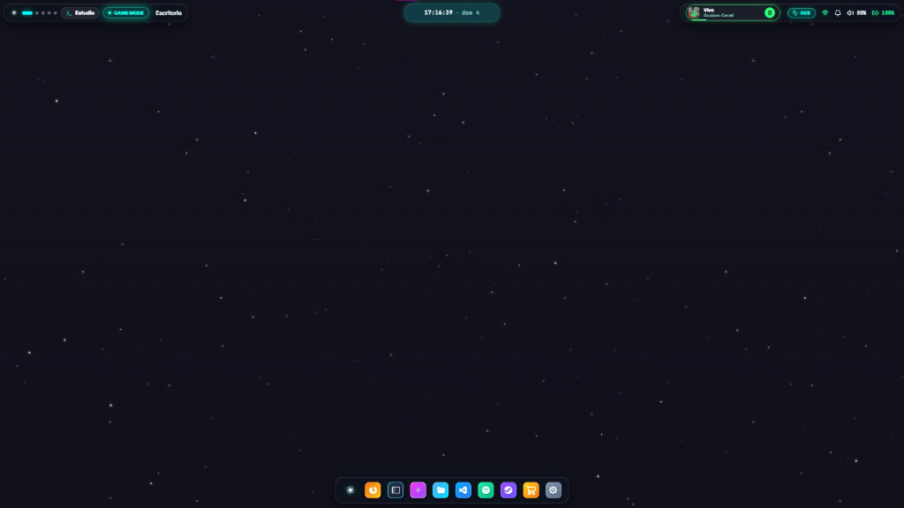
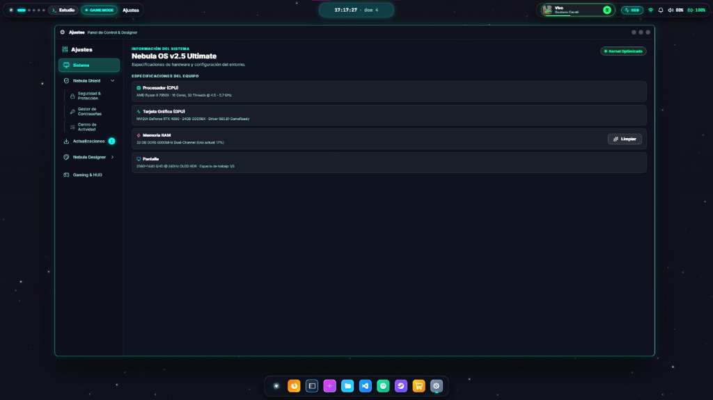
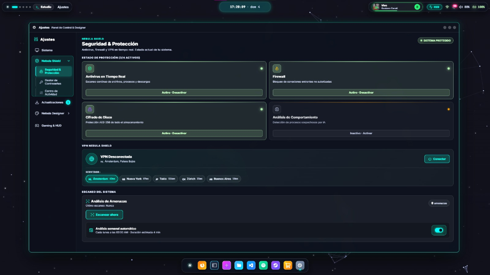
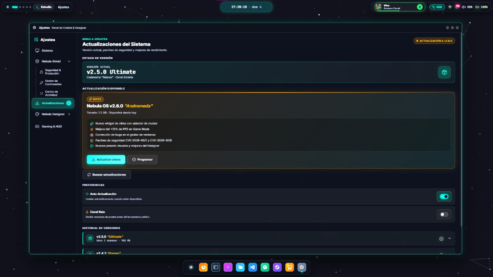
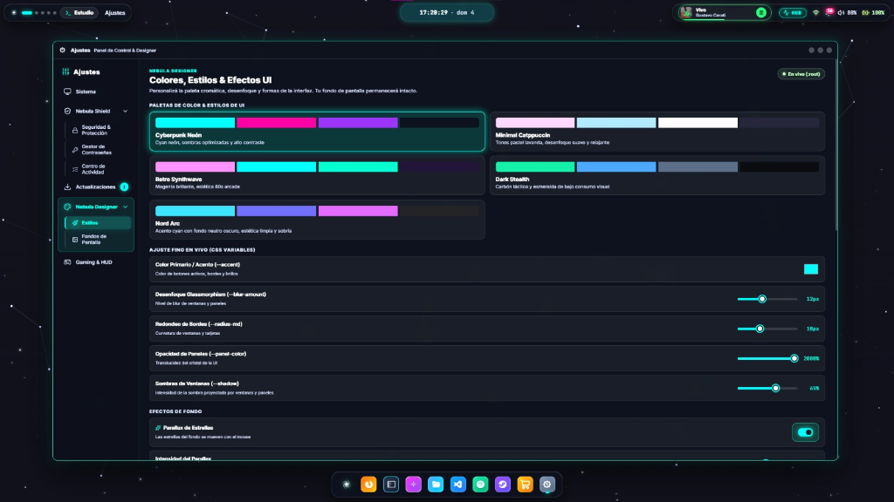

Panel de Control Rápido
Muestra los espacios de trabajo activos y modos del sistema (como el Game Mode).
Reloj y Calendario
Haz clic para desplegar notificaciones y agenda.
Área de Bandeja (Tray)
Controles de Spotify, estado de red, volumen y batería. Todo accesible a un clic.
Dock Unificado
Tus aplicaciones favoritas ancladas. Animaciones fluidas estilo macOS pero adaptables mediante Nebula Designer.

Navegación del Panel
Menú lateral intuitivo para moverse entre Sistema, Shield, Contraseñas y Designer.
Monitor de Recursos
Visualiza en tiempo real los hilos del CPU y el consumo exacto de tu memoria RAM.
Limpiador de RAM
Libera memoria caché instantáneamente con un solo clic. Ideal antes de abrir un juego pesado.

Antivirus y Firewall
Protección en tiempo real nativa. Puedes desactivarlo temporalmente mediante estos interruptores.
VPN Integrada
Selecciona tu servidor global preferido (ej. Ámsterdam o Buenos Aires) y navega cifrado sin instalar apps de terceros.
Análisis Manual
Fuerza un escaneo profundo de todo el disco buscando malware o software sospechoso.

Versión Actual
Indica la versión estable instalada. Aquí puedes verificar si estás en la rama estable o beta.
Registro de Cambios (Changelog)
Resumen claro de lo que trae la nueva actualización (nuevos widgets, mejoras de FPS, etc).
Actualizaciones Silenciosas
Activa este switch para que el sistema se actualice solo en segundo plano cuando no estés jugando.

Paletas Predefinidas
Cambia el tema global al instante. Desde Cyberpunk Neón hasta Minimal Catppuccin, alterando todos los colores del OS.
Personalización Avanzada
Deslizadores para alterar variables CSS globales en vivo: ajusta el nivel de desenfoque (blur), redondeo de ventanas y opacidad del cristal.
Efectos de Escritorio
Activa el Parallax de estrellas para que tu fondo interactúe con el movimiento del ratón de manera fluida.